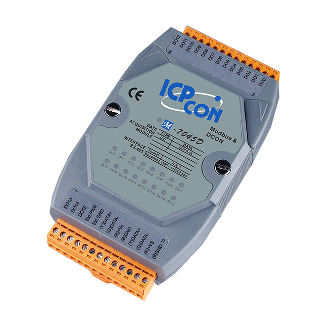

Modbus 通訊學習
用 RTU 與 TCP 建立工業通訊的封包理解
Modbus RTU/TCP Lab 整理了兩種常見 Modbus 通訊型態：透過 RS-485 進行 RTU 控制與讀值，並透過 Ethernet 進行 TCP 封包觀察。內容聚焦在設備連線、function code、request / response、register 解讀與排錯流程。

RTU 輸出控制
數位輸出模組適合用來練習 Modbus RTU 控制，因為送出 command 後，可以直接從 DO LED 的亮滅確認封包是否生效。
RTU 控制環境
| 工具 | MBRTU |
|---|---|
| 介面 | USB to RS-485 轉換器 |
| COM Port | COM5 |
| Baudrate | 115200 |
| Data / Stop | 8 data bits，1 stop bit |
| Slave ID | 1 |

FC01 讀取 DO 狀態
Request
01 01 00 00 00 10Response
01 01 02 00 00D0 到 D15 皆為 0，代表初始狀態全滅。
FC05 單點控制 DO0
ON
01 05 00 00 FF 00OFF
01 05 00 00 00 0000 00 是 DO0，FF 00 是 ON，00 00 是 OFF。
FC0F 複數控制
Command
01 0F 00 00 00 10 02 03 0003 00 的最低兩個 bit 為 1，所以 DO0、DO1 亮，其餘熄滅。
RTU 感測讀值
感測器模組適合用來練習 register 讀值。RTU 走 RS-485，封包尾端需要 CRC，工具有時會自動補上。
RTU 讀值路徑
- PC 透過 USB-RS485 轉換器接到設備。
- 使用 MBRTU 發送 Modbus RTU command。
- 主要使用 FC04 讀取 input registers。
- 解讀資料時要確認 register 位址、單位與倍率。
讀取感測資料範例
Request
C0 04 00 00 00 08Response
C0 04 10 00 00 03 85 00 1F ...03 85 轉成十進位是 901，若對應 CO2 register，代表 CO2 約 901 ppm。
TCP 封包觀察
Modbus TCP 走 Ethernet。它不使用 RTU 的 CRC，而是在封包前面加入 MBAP Header，並透過 TCP 層處理傳輸可靠性。
TCP 連線重點
| 工具 | MBTCP |
|---|---|
| 介面 | Ethernet |
| Port | 502 |
| 識別方式 | IP Address + Unit ID |
| 封包差異 | 前面多 MBAP Header，不帶 RTU CRC |
Modbus TCP request 範例
Request
00 01 00 00 00 06 01 04 00 00 00 0800 01 00 00 00 06 是 MBAP Header，後面的 01 04 00 00 00 08 是 Unit ID 與 PDU。


RTU / TCP 比較
| 項目 | Modbus RTU | Modbus TCP |
|---|---|---|
| 常見介面 | RS-485 / RS-232 | Ethernet |
| 常用工具 | MBRTU | MBTCP |
| 設備識別 | Slave ID | IP Address + Unit ID |
| 封包格式 | Slave ID + Function Code + Data + CRC | MBAP Header + Unit ID + Function Code + Data |
| 錯誤檢查 | RTU 封包尾端 CRC | TCP 層處理傳輸可靠性，Modbus 本身不加 RTU CRC |
| 適合練習 | 序列通訊、DO 控制、register 讀值 | 網路通訊、Wireshark 封包觀察、MBAP Header 拆解 |
封包重點
Function Code
- FC01：Read Coils，讀取 DO / coil 狀態。
- FC03：Read Holding Registers，常用於讀設定值。
- FC04：Read Input Registers，常用於讀感測值。
- FC05：Write Single Coil，控制單一 DO。
- FC0F：Write Multiple Coils，一次控制多個 DO。
Register 解讀
- 兩個 byte 組成一個 16-bit register，例如
03 85。 0x0385轉十進位是 901。- 解讀感測值時要確認單位，例如 ppm、ug/m3、攝氏、濕度。
- 文件編號可能是 30001 / 40001，但工具可能要填 0-based address。
加分觀念：如果 response 的 function code 變成原本的 code +
0x80，代表設備回報 exception。例：01 84 02 表示 FC04 發生錯誤，exception code 02 通常是 Illegal Data Address。
排錯清單
Modbus 排錯要從連線層開始，再往協定與資料解讀檢查。先確認設備真的有回應，再確認封包內容是否正確。
RTU 沒回應
- COM Port 是否選對。
- Baudrate、data bit、stop bit、parity 是否一致。
- Slave ID 是否正確。
- RS-485 D+ / D- 是否接反。
- 設備電源與 GND 是否正常。
TCP 連不上
- IP 是否同網段。
- 是否能 ping 到設備。
- Port 502 是否可連線。
- Unit ID 是否與設定一致。
- 防火牆或網路線是否造成阻擋。
資料不合理
- Start address 是否用錯 0-based / 1-based。
- Function code 是否選錯。
- High byte / low byte 是否組合正確。
- 資料倍率與單位是否查過手冊。
- 是否讀到設定 register 而不是感測 register。